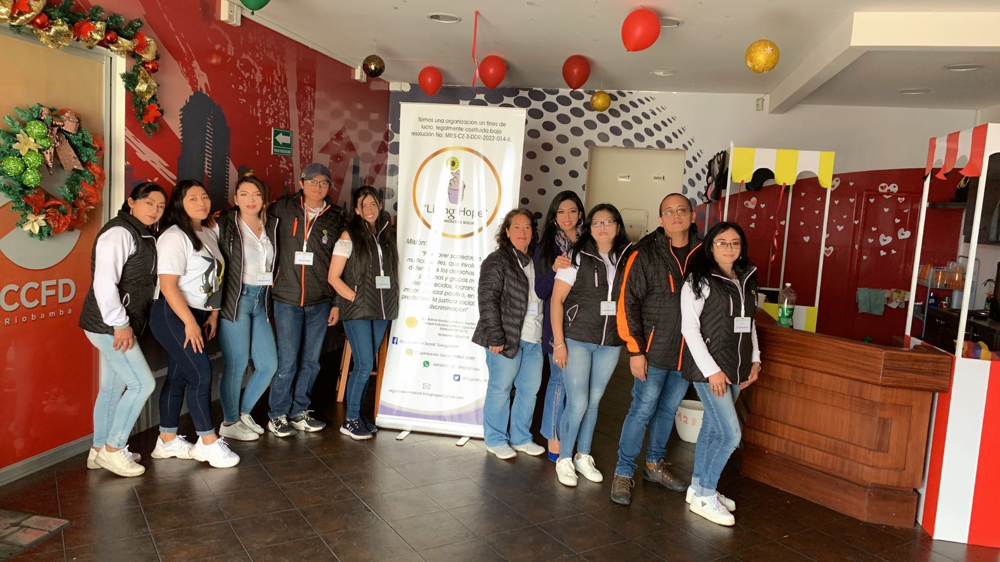

Nuestra causa es servir con respeto, compromiso y solidaridad, generando impacto real en la comunidad a través de acciones concretas y humanas. Brindamos apoyo, dignidad y esperanza para transformar vidas.
Creemos que juntos podemos transformar realidades. Tu apoyo, tu tiempo o tu alianza pueden marcar la diferencia.

Súmate a nuestras acciones solidarias y acompaña directamente a personas y familias en situación de vulnerabilidad.
“Quiero ser voluntario”Pequeños gestos que generan grandes cambios. (2025)
Donaciones